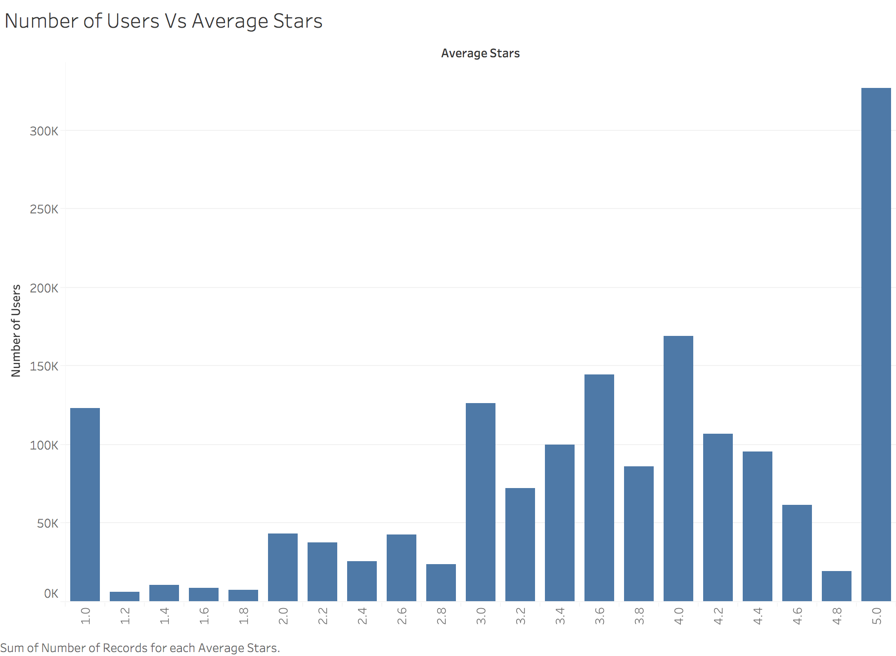

We can observe from the plot that the distribution is uneven with neglible number of reviews written in 2004 (Yelp was founded in 2004) and the maximum in 2017. There is a slight dip in 2018.
Assignment 2: Exploratory Data Analysis
Abhilasha Sancheti — sancheti@cs.umd.edu
Dataset
Yelp Open Dataset
The Yelp dataset is a subset of Yelp's businesses, reviews, and user data which is released by Yelp for use in personal, educational, and academic purposes. This dataset contains 1,223,094 tips by 1,637,138 users over 1.2 million business attributes like hours, parking, availability, and ambiance with aggregated check-ins over time for each of the 192,609 businesses. The dataset is divided into multiple relations namely, reviews, business, users, tips, check-ins, and photos. For the purpose of this report, we will be using reviews, business, users and tips relations.
I am interested in analyzing this dataset because Yelp is a very famous company which was founded to help people find great local businesses like dentists, restaurants, and mechanics. There are a lot of users and businesses who use Yelp web/mobile app and thus analyzing large real-world data is fascinating in itself.
The data is available online here
Initial Analysis Questions
- What can we say about the popularity of Yelp among its users? What kind of businesses are associated with Yelp? How useful are the reviews according to the users?
- In which businesses and where should Yelp invest to increase the number of reviews written and user subscriptions?
- How active are the users of Yelp? How much can we rely on the reviews written by the users and which are the most reliable/credible users?
Data Wrangling
The dataset was quite large in size, also there were text reviews present in the dataset which we did not intend to analyze since that will involve Natural Language Processing which is outside the scope of this class. Therefore, we filter out the text fields from every relation they occur in so that data size becomes manageable. Also, there were many attributes related to opening hours, take-aways from restaurants which we have filtered out for the purpose of this analysis. We are not analyzing photos relation since that will involve computer vision.Discoveries & Insights
The analysis starts with the plots of individual attributes or dimensions to assess distributions and data quality. As we go further into finding the insights, we analyze data using multiple dimensions and measures in order to answer the analysis questions.
Part 1
We start with the reviews relation to analyze the trend of reviews with year.
Next we look at the distribution of star ratings over reviews.
We can observe from this plot that most of the reviewers rate businesses extremely, meaning that they give 1 or 5-stars more frequently than 2 or 3 stars. We notice that more than 75% of the reviews have ratings greater than or equal to 3 which can be considered as positive ratings and less than 25% are negative. This observation led us to investigate the quality of the reviews.
In order to study the quality of the reviews we looked at the distribution of funny, cool and useful reviews with star ratings.
We consider star as a dimension here and then plot the reviews with a particular star rating and number of funny, cool and useful votes it recieves respectively. From these plots, we can notice that on an average 5-star rated reviews get double the number of funny votes as compared to the 1-star rated reviews. Similar is the trend with cool votes. People find low rated reviews twice as useful as 5-star rated reviews. Overall, people find reviews more cool than useful or funny.
Next we are interested in knowing the top business with most reviews and the distribution of stars over those reviews.
This plot presents the top 25 businesses receiving the most number of reviews. Each bar also shows the fraction of reviews with different star rating. In order to get the names of the businesses, we join the reviews and business relations. This plot helps us in comparing the businesses with similar number of reviews but different proportions of 5-star ratings. The business receiving the maximum number of reviews is Mon Ami Gabi with maximum number of 5-star ratings as well. Even though Monte Carlo Hotel & Casino has more number of reviews than Bobby Q, Bobby Q has far more number of 5-star rated reviews as compared to Monte Carlo Hotel ∧ Casino.
Part 2
In this part we analyze the business relation to understand the geographical distribution and popularity of businesses across countries, states, and cities.
This visualization shows the distribution of number of businesses by stars. There are nearly 20% of the businesses with less than 3-stars. More than 65% of the businesses are 4/5-star rated. These businesses are spread across three countries USA, Canada and UK.
73.7% of the businesses are located in USA, 26.29% in Canada and 0.01% in UK. We will be considering businesses from USA and Canada only for further studies. We individually plot the number of businesses with states in the USA and Canada.
This plot shows the distribution of average star rating of businesses with state in the USA. The colour intensity shows the number of businesses over which the average is being taken. The size of the dots represent the average star rating. We can observe from the plot that even though Tennessee (TN) and New Jersey (NJ) have an average star rating of 5 which is more than any other state in the USA, the number of businesses is negligible (precisely only 1).
The maximum average rating of businesses is 3.5 across the states of Canada. Therefore, for further analysis we will be considering only the businesses in USA.
The size of the bubble represents the number of businesses and the color saturation shows the star rating. We can observe that Arizona (AZ) has maximum number of 5-star rated businesses across USA and Nevada (NV) is on the second position.

In order to further dig deeper into the businesses, we plot the top 10 cities having most number of businesses. To our surprise we found two discrepancies in the data.
- The same city is written with different spellings, short forms and according to the region. As a consequence the number of businesses in a city was not being calculated correctly. The above plot shows that Las Vegas has 29361 businesses in total and the plot below shows the different ways in which Las Vegas has been spelt.
- Even though we have filtered the cities to be in USA, we can observe that Toronto and Calgary shows up in top 10. The reason behing this is that if we remove the filter of country then these cities are in the top 10. However, after looking at the record which is showing up in the plot we cam eto know that there was a typing error in the state code. Instead of ON (Ontario), OH (Ohio) was written and because of which it was asssigned USA as the country.
To correct the 1st dicrepancy we group the cities such that the different variants of the same city lie in the same city. In the corrected plot shown above, we can observe that the number of businesses is nearly 31000 and not 29361 for Las Vegas. For the 2nd discrepancy, we could not do anything because we cannot modify the data but we can filter those cities out since they were not US cities. Notice that Las Vegas not only has the maximum number of businesses but it also has maximum number of 5-star rated businesses. One more thing to notice is that although Arizona (AZ) has the maximum number of 5-rated businesses from the bubble plot, Las Vegas which is in Nevada (NV) is the city with most 5-rated businesses.
Part 3
Now, we will investigate into the activity of users, who are following them, what kind reviews they write and the ratings they provide to the businesses.
The visualization shows the number of users joining Yelp with year. We find that the number of users joining experienced a monotonic increase till 2015 and then a monotonic decrease. This might be one of the reasons behind decrease in the number of reviews from 2017 to 2018 in the first plot of the report. Next, we analyze the distribution of users into different categories.
Only 5% of the users belong to the Elite category, rest all are Non-Elite users. In the next plot, we will look at the rate of turning from a non-elite user to an elite user with time.
In this plot, we have filtered for users who are in the elite category only. We can infer from the trend that elite users distinction was introduced in 2006. Maximum number of users who joined in 2011 converted from a non-elite status to an elite status in 2012 which is after 6 years of introduction of elite users. This shows that most of the users take time in adapting to the new schemes and realizing its benefits.
Next, we will look at the activity of the users in terms of the log of number of reviews written by them.
We can observe that the above plot is a hyperbola suggesting that the number of users and their review count follows an inversely proportional relationship. Now, we will study the relationship between the number of reviews written by the users and the average star rating given by them.
We notice that users who give average rating between 3 to 4.5 write the maximum number of reviews. Next, we will look at the rating patterns of users.

We have created bins of size 0.2 of average rating for creating the histogram plot. The plot shows that users tend to rate at extremes as observed previously as well.. This repeated observation led us to investigate into the credibility of the users. For this, we plotted the average star ratings of each user against number of funny, useful and cool votes given by them.
The plots came out to be very similar suggesting that credible users rate businesses between 3 and 5. The plots also suggest that number of cool, funny and useful votes given by users are highly correlated.
This plot enforces the above finding of credible users. The users giving rating between 3 to 5 have most number of friends.
Summary
To sum up, we answer each of the analysis questions below.
- What can we say about the popularity of Yelp among its users? How does users rate the bussinesses and are the reviews useful according to the peer users?
- We can conclude from the above analysis that in terms of number of reviews written by the users Yelp has consistently gained popularity with doubling the number of reviews in 2010 from 2009 and more than double from 2013 to 2017. Although there is a decrease in the number of users joining Yelp after 2015, the number of reviews written have increased. Users have the tendency to rate extremely (more 1 and 5-stars than either of 2,3,or 4) and they find 1-star rated reviews twice as useful as 5-star rated reviews which they find more funny. Yelp can probably incentivize users whose reviews are found as more useful. This will help in gaining trust of users and more users subscripting to Yelp.
- In which businesses and where should Yelp invest to increase the number of reviews written and user subscriptions?
-
From the analysis we found that more than 70% of the the businesses are located in the USA with maximum number of businesses situated in Nevada. Among these, Las Vegas has the maximum number of businesses as well as maximum number of 5-star rated businesses. Hence, popular businesses are unevenly distributed across the states. Therefore, Yelp can invest more in these popular businesses by providing discount vouchers to users for these businesses and gain more customers since having discounts on popular businesses will attract more users and eventually more reviews. Also, there are many states in the USA where the number of businesses is very less so Yelp can subscribe more businesses in those areas.
- How active are the users of Yelp? How much can we rely on the reviews written by the users and which are the most reliable/credible users?
-
The number of users joining yelp witnessed a increase till 2015 and after that a decrease. Maximum number of users converted from Non-elite status in 2011 to elite status in 2012. Number of users writting reviews has a hyperbolic relationship with the number of reviews written. So, Yelp can provide timely incentives to users who are not as active as they used to be earlier. We also found out that users giving stars between 3-5 are most credible and have more number of friends as compared to those who give 1-2 stars. So these users can also be properly targeted.
- Same city is named by variations in spellings, acronyms or based on region which may result in wrong statistics.
- The state code for two businesses were wrong leading them to be grouped into a different country.
Evaluation of Tool
Strengths
STRENGTH 1: Tableau is UI-based and not script-based so the procedure to build a visualization is very easy. It can automatically detect encodings and provide suggestions via Show Me feature which makes switching between different types of encodings very quick.
STRENGTH 2: Tableau autogenerates a few measures like 'Number of Records' which is very useful. If the data contains attributes like state/country then it automatically generates latitude and longitude which can be used to create filled maps quite conveniently.
STRENGTH 3: Tableau can understand attribute-types like Date which makes it easier to split the attribute. For instance, we had an attribute named date, which contained date in the format mm/dd/yyyy along with the timestamp in the format hh:mm:ss AM/PM. With the help of a simple drop-down menu, I was able to choose the year while making the visualization.
Weaknesses
WEAKNESS 1: Although Tableau provides many useful autogenerated and recommendation features, it can sometimes prove restricting in terms of what visualization can be made. For instance, I wanted to create multiple visualizations with same attribute on one axis but different attributes on the another axes and arrange the resulting plots in a grid. But this was not possible to do in Tableau.
WEAKNESS 2: There is a limit on the json file that can be uploaded. because of this restriction I had to chunk the data into multiple files, upload them separately and then take a union of these chunks inside Tableau.
WEAKNESS 3: When data is uploaded in from an excel sheet then different worksheets become the part of the same data source. However, there is no such utility to upload different json files in the same data source. As a result, different relations become part of different data sources and joins cannot be made using the UI. For instance, I had to create relationships between different relations in order to join them via drop-down menus since drag and drop joins can only be done for relations in same data source.
Evaluation Summary and Discussion
In summary, Tableau is a very powerful visualization tool with a plethora of features to create a visualization. The analysis can be done interactively and effectively. However, there is still a scope for improvement. One direction of improvement is to allow users to build multiple visualizations with an attribute on one axis same while any attribute on other axis so that comparisons can be made easily. Another scope for improvement is to allow uploading multiple json files together in the same data source so that joins can be done interactively. Lastly, the assignment helped me in learning a visualization tool like Tableau. It also helped me in understanding the concepts of encoding channels via practical use of them. I was able to understand the difference between a good and a bad visualization. I could find various interesting insights from the dataset by exploring various types of visualizations.